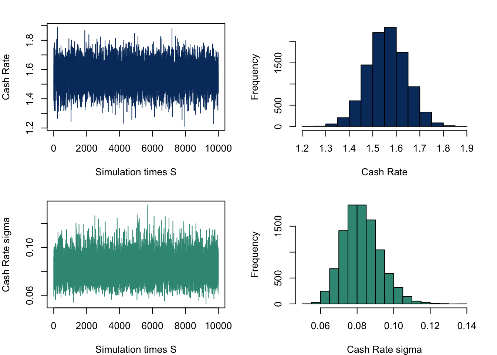
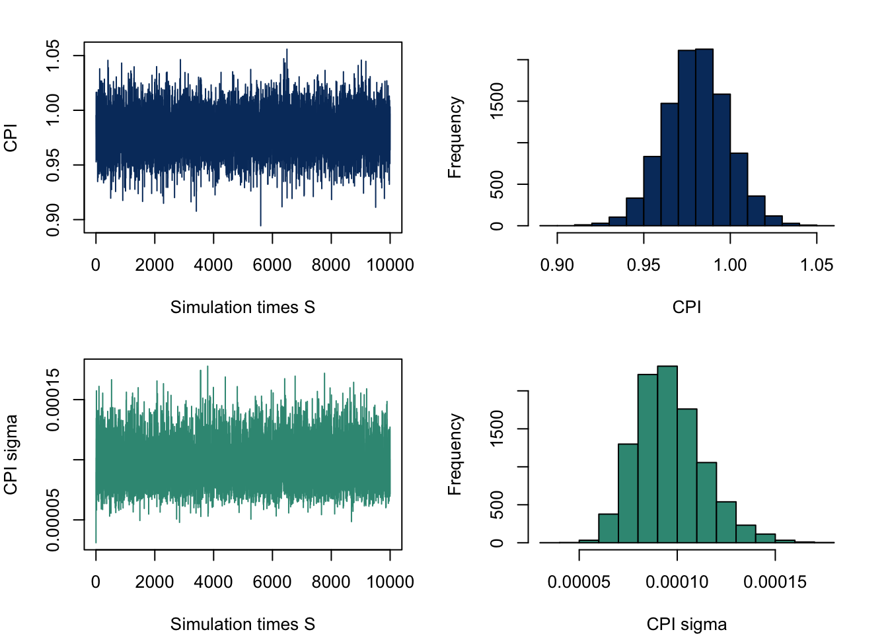
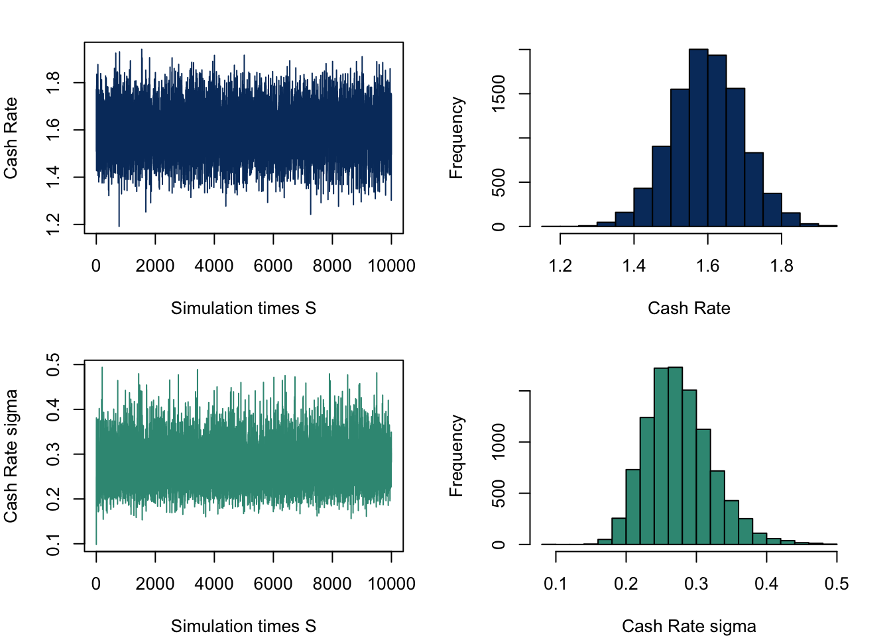
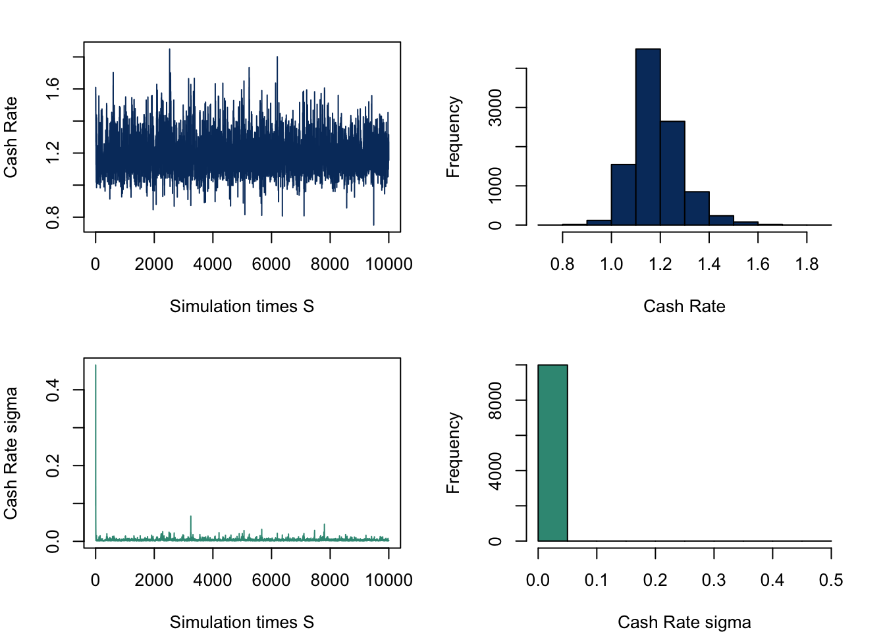

Forecasting Inflation and Interest Rate in Australia
Abstract. This paper forecasts Australian inflation and interest rate using Bayesian Vector Auto Regressive Model with extended features such as stochastic volatility and multivariate-t distributed error term, with the purpose of allowing time varying volatility and the error to capture sudden increases in volatility during periods with extreme events such as the COVID-19 pandemic. It is an application of such method, which is often considered as a significant improvement over a standard BVAR, to Australian macroeconomic variables to generate spot and density forecasts using post-COVID data.
Keywords. Bayesian Vector AutoRegressive Model, BVARs, Stochastic Volatility, t-distributed error, inflation, interest rate, Australian economy
Introduction
Objective: This paper aims to forecast Australian short term interest rate (cash rate target) and inflation. It follows the method in Hartwig(2022), using a BVAR model with multiple specifications for its error covariance matrix, such as it being multivariate-t distributed, following a stochastic process or a combination of both.
Question: Can the model suggested produce reliable spot and density forecasts for Australian inflation and interest rate?
Motivation: Volatility variation across time in macroeconomic variables is widely explored in literature (Bloom,2014), which the standard Gaussian error modeling may fail to capture and then leads to unreliable results. Hartwig(2022) suggests that several BVAR models with modified volatility distribution which differentiate from the standard Gaussian perform better under likelihood measurement. The best fitting one with post-COVID19 data is BVAR-t-SV. The stochastic process captures the time persistence of volatility, which is evident in variables such as short term interest rate(Ball and Torous,1999). A multivariate-t distributed error, with relatively fatter tails, can recognize some extreme volatility as temporary spikes instead of persistent effect. The forecast focus on inflation and interest rate due to their strong relevance to policy making and people’s daily lives. Many challenges arise post-COVID for government to facilitate the revitalization of the economy, where forecast plays its roles. This research contributes to the existing literature by applying the forecasting method tested to fit the post-COVID data in other countries in Australian economy to facilitate better predictions.
Data
All data is obtained from RBA. Daily or monthly data is converted to quarterly format by averaging. Exchange rate, cash rate and unemployment rate are in their original format. Other variables are log transformed. These variables are:
Cash rate: the cash rate target in percentage (series_id:FIRMMCRTD)
Money aggregate(M1): the seasonal adjusted M1 aggregate in $billion (series_id:DMAM1S)
Exchange Rate AUD/USD: the exchange rate in USD per Australian dollar (series_id:FXRUSD)
Consumer Price Index Consumer Price Index (series_id:GCPIAG)
Real GDP: Gross Domestic Product in real terms in $million (series_id:GGDPCVGDP)
Unemployment: Unemployment rate in percentage (series_id:GLFSUPSA)
The data window covers 1990 Q1 to 2023 Q4, as the most up-to-date post-COVID data in Australia, similar to Hartwig(2022). Cash rate, real GDP and unemployment rate are standard to be included forecasting inflation as the cyclical variables(eg.Stock and Watson(1999)). Money aggregate is a supply side driver for commodity price (eg. Dhakal et al(1994)). The exchange rate AUD/USD captures the prices trading with Australia’s biggest international trading partner.
Time Series Plots
The following are the time series plot all variables.
Autocorrelation Function (ACF) and Partial Autocorrelation Function (PACF)
The following ACF plots of all transformed variables show autocorrelation over a large number of lags, therefore, likely to be non-stationary.
In PACF plots, significant correlations were only observed in the first lag for variables except for unemployment rate. It demonstrates partial autocorrelation for the first and second lag, also in some lags order 15 to 20.
Augmented Dickey-Fuller
The table shows the result of Augmented Dickey-Fuller test. All time series are non-stationary at 5% significance level except for cash rate in this test.
| variable | p_value | non_stationary |
|---|---|---|
| cpi_log | 0.1161 | 1 |
| gdp_log | 0.8745 | 1 |
| m1_log | 0.1178 | 1 |
| ex | 0.6245 | 1 |
| cr | 0.0107 | 0 |
| un_em | 0.3862 | 1 |
The table shows the result of Augmented Dickey-Fuller test using the first-differenced data. All variables are integrated of order 1.
| variable | p_value | non_stationary |
|---|---|---|
| cpi_log | 0.0180 | 0 |
| gdp_log | 0.0100 | 0 |
| m1_log | 0.0219 | 0 |
| ex | 0.0100 | 0 |
| cr | 0.0177 | 0 |
| un_em | 0.0100 | 0 |
Model
Here presents the Bayesian VAR in the general form of a VAR(p):
\[y_t = a_0 +A_1y_{t-1}+...+A_py_{t-p}+ \epsilon_t \]
where
- \(y_t\) is a \(n \times 1\) vector
- \(n\) is the number of variables
- \(a_0\) is the \(n \times 1\) intercept vector
- \(A_p\) is \(n \times n\) coefficient matrix for each lag order \(p\).
\[y_t = (CPI \underline{} log_t, GDP \underline{} log_t, M1 \underline{} log_t, ER_t, CR_t, Unemployment_t)' \]
In compact matrix notation:
\[Y = XA+E\] where
- \(Y_{T \times n}=(y_1', y_2',...,y_T')'\)
- \(X_{T \times K}=(x_1', x_2',...,x_T')'\)
- \(x_{i K \times 1}=(1, y_{t-1}',...,y_{t-p}')'\) for i = 1,…T.
- \(A_{K \times n}=(a_0', A_1',...,A_p')'\) is a compact coefficient matrix
- \(E_{T \times n}=(\epsilon_1', \epsilon_2',...,\epsilon_T')'\).
- \(K = 1+pn\).
In standard form, the error term is normally distributed \[\epsilon_t \sim iidN(0, \Sigma)\] or \[vec(E) \sim N(0, \Sigma \otimes I_T)\]
- \(\Sigma\) is a \(n \times n\) covariance matrix
- \(I_T\) is an \(T \times T\) identity matrix.
To allow for non-Gaussian error, we can relax the assumption for the identity matrix and substitute it for \(\Omega\):
\[vec(E) \sim N(0,\Sigma \otimes \Omega)\]
The specifications of \(\Omega\) and their meaning will be discussed in the next session.
Estimation Procedure
The Baseline Model
The baseline model is the standard form where \(\Omega\) = \(I_T\). With predictive density:
\[Y|X,A,\Sigma \sim MN_{T \times N} (XA, \Sigma, I_T)\] Therefore the kernel of the likelihood function: \[L(A,\Sigma|Y,X) \propto det(\Sigma)^{-\frac{T}{2}}exp(-\frac{1}{2}tr[\Sigma^{-1}(Y-XA)'(Y-XA)])\] The matrix-variate normal and inverse Wishart natural conjugate priors for \(A\) and \(\Sigma\):
\[p(A,\Sigma) = p(A|\Sigma)p(\Sigma)\] \[A|\Sigma = MN_{K\times N}(\underline{A},\Sigma,\underline{V})\] \[\Sigma \sim IW_N(\underline{S},\underline{\nu})\] Therefore the kernel of the prior distribution:
\[ \begin{align} p(A,\Sigma) &\propto \det(\Sigma)^{-\frac{N+K+\underline{v}+1}{2}} \\ &\times exp\{-\frac{1}{2}tr[\Sigma^{-1}(A-\underline{A}) \underline{V}^{-1}(A-\underline{A})]\} \\ &\times exp\{-\frac{1}{2}tr[\Sigma^{-1}\underline{S}]\} \end{align} \]
Derive the product of the likelihood function and the density function \(p(A,\Sigma)\):
\[p(A,\Sigma|Y,X) \propto L(A,\Sigma|Y,X)p(A,\Sigma) \] Collect corresponding terms and then we have the full conditional posterior distribution:
\[A|\Sigma = MN_{K\times N}(\bar{A},\Sigma,\bar{V})\] \[\Sigma \sim IW_N(\bar{S},\bar{\nu})\] where the parameters are:
\[\bar{V} = (X'X + \underline{V}^{-1})^{-1}\]
\[\bar{A} = \bar{V}(X'Y + \underline{V}^{-1}\underline{A})\] \[\bar{S} = \underline{S}+Y'Y + \underline{A}'\underline{V}^{-1}\underline{A}-\bar{A}'\bar{V}^{-1}\bar{A}\] \[\bar{\nu}= T + \underline{\nu}\] To accommodate non-stationary data, we use minnesota prior:
\[\underline{A} = [0_{N\times1} \space\space I_N \space\space 0_{N \times (p-1N) }]'\] \[\underline{V} = diag([\kappa_{2} \space \space \kappa_{1} (p^{-2} \otimes i_{N}')])\] This prior assumes the macroeconomic time-series leans towards a random walk given that except for first lag, all other slope parameters in \(\underline{A}\) are zero. The shrinkage parameters in \(\underline{V}\) are set to be \(\kappa_{2}\), a relatively large value as there is little information about the intercept parameters. And for slope parameters, \(\kappa_{1}\) will be significantly smaller and decreasing over lags.
The following function represents the estimation procedure:
#Function form of baseline model
bvar_est = function(Y,X,p){
#set parameters
t = nrow(Y)
N = ncol(Y) #number of variables
S = 500 #number of draws
#mle
A.hat = solve(t(X)%*%X)%*%t(X)%*%Y
Sigma.hat = t(Y-X%*%A.hat)%*%(Y-X%*%A.hat)/t
# minnesota prior
k1 = 0.02^2
k2 = 100
A.prior = matrix(0,nrow(A.hat),ncol(A.hat))
A.prior[2:(1+N),] = diag(N)
V.prior = diag(c(k2,k1*((1:p)^(-2))%x%rep(1,N)))
S.prior = diag(diag(Sigma.hat))
nu.prior = N+1
# NIW posterior
V.bar.inv = t(X)%*%X + diag(1/diag(V.prior))
V.bar = solve(V.bar.inv)
A.bar = V.bar%*%(t(X)%*%Y + diag(1/diag(V.prior))%*%A.prior)
nu.bar = nrow(Y) + nu.prior
S.bar = S.prior + t(Y)%*%Y + t(A.prior)%*%diag(1/diag(V.prior))%*%A.prior - t(A.bar)%*%V.bar.inv%*%A.bar
S.bar.inv = solve(S.bar)
#draws from posterior
Sigma.posterior = rWishart(S, df=nu.bar, Sigma=S.bar.inv)
Sigma.posterior = apply(Sigma.posterior,3,solve)
Sigma.posterior = array(Sigma.posterior,c(N,N,S))
A.posterior = array(rnorm(prod(c(dim(A.bar),S))),c(dim(A.bar),S))
L = t(chol(V.bar))
for (s in 1:S){
A.posterior[,,s]= A.bar + L%*%A.posterior[,,s]%*%chol(Sigma.posterior[,,s])
}
round(apply(A.posterior,1:2,mean),3)
# report posterior means and sd of parameters
A.E = apply(A.posterior,1:2,mean)
Sigma.E = apply(Sigma.posterior,1:2,mean)
output = list(
A.E = A.E,
Sigma.E = Sigma.E,
A.posterior.draws = A.posterior,
Sigma.posterior.draws = Sigma.posterior
)
return(output)
}Posterior Draws
Mean matrix \(A\):
head(round(apply(baseline.posterior.draws$A.posterior.draws,1:2,base::mean),6)) [,1] [,2] [,3] [,4] [,5] [,6]
[1,] 0.006855 0.006707 0.026637 -0.000275 0.028623 -0.056504
[2,] 1.000010 -0.000005 -0.000020 0.000012 0.000899 -0.000043
[3,] 0.000012 0.999996 -0.000038 0.000011 0.001365 0.000316
[4,] 0.000036 -0.000035 0.999865 -0.000031 0.003428 -0.000161
[5,] 0.000001 -0.000001 -0.000060 0.999924 -0.000677 0.000475
[6,] -0.000031 -0.000046 -0.000174 -0.000134 0.987929 0.007182Mean matrix \(\Sigma\):
head(round(apply(baseline.posterior.draws$Sigma.posterior.draws,1:2,base::mean),6)) [,1] [,2] [,3] [,4] [,5] [,6]
[1,] 0.000034 0.000016 -0.000033 0.000031 0.001086 -0.000696
[2,] 0.000016 0.000104 -0.000011 0.000058 0.000526 -0.001369
[3,] -0.000033 -0.000011 0.000631 -0.000055 -0.004202 0.001051
[4,] 0.000031 0.000058 -0.000055 0.001300 0.004146 -0.001176
[5,] 0.001086 0.000526 -0.004202 0.004146 0.191010 -0.061706
[6,] -0.000696 -0.001369 0.001051 -0.001176 -0.061706 0.087122Trace Plot
The following diagrams are the trace plots and histograms of the first lag auto-correlative parameters for variable \(CPI \underline{} log_t\) in the \(A\) matrices in the posterior draws. The autocorrelation is significant while the variance is quite small.
par(mfrow=c(2,2), mar=c(4,4,2,2))
plot.ts(baseline.posterior.draws$A.posterior.draws[2,1,], xlab = "Simulation times S", ylab = "CPI", col = mcxs1)
hist(baseline.posterior.draws$A.posterior.draws[2,1,], xlab = "CPI", col = mcxs1, main = '')
plot.ts(baseline.posterior.draws$Sigma.posterior.draws[1,1,], xlab = "Simulation times S", ylab = "CPI sigma", col = mcxs2)
hist(baseline.posterior.draws$Sigma.posterior.draws[1,1,], xlab = "CPI sigma", col = mcxs2, main = '')Similarly, for \(CR_t\), the autocorrelation is significant. Its variance is visibly larger than the previous variable.
par(mfrow=c(2,2), mar=c(4,4,2,2))
plot.ts(baseline.posterior.draws$A.posterior.draws[6,5,], xlab = "Simulation times S", ylab = "Cash Rate", col = mcxs1)
hist(baseline.posterior.draws$A.posterior.draws[6,5,], xlab = "Cash Rate", col = mcxs1, main = '')
plot.ts(baseline.posterior.draws$Sigma.posterior.draws[5,5,], xlab = "Simulation times S", ylab = "Cash Rate sigma", col = mcxs2)
hist(baseline.posterior.draws$Sigma.posterior.draws[5,5,], xlab = "Cash Rate sigma", col = mcxs2, main = '')
The Extended Model 1 - Student-t Distributed Error (BVAR-t)
The model is where \(\Omega\) = \(diag(\lambda_1, \lambda_2,...,\lambda_T)\). Each lambda independently drawn from an Inverse Gamma 2 distribution \(IG2(\nu-2,\nu)\). This implies the distribution of error term being:
\[ \epsilon_t \sim N(0, \lambda_t \Sigma)\]
compared to the baseline model, the error distribution has fatter tails which captures sudden spike of variance.The predictive density:
\[Y|X,A,\Sigma \sim MN_{T \times N} (XA, \Sigma, \Omega)\] Therefore the kernel of the likelihood function:
\[L(A,\Sigma,\Omega|Y,X) \propto det(\Omega)^{-\frac{N}{2}}det(\Sigma)^{-\frac{T}{2}}exp(-\frac{1}{2}tr[\Sigma^{-1}(Y-XA)'\Omega^{-1}(Y-XA)])\] I assume the same matrix-variate normal and inverse Wishart natural conjugate priors for \(A\) and \(\Sigma\). Derive the product of the likelihood function and the density function \(p(A,\Sigma)\), collect corresponding terms and then we have the full conditional posterior distribution:
\[A|\Sigma = MN_{K\times N}(\bar{A},\Sigma,\bar{V})\] \[\Sigma \sim IW_N(\bar{S},\bar{\nu})\] where the parameters are:
\[\bar{V} = (X'\Omega^{-1}X + \underline{V}^{-1})^{-1}\]
\[\bar{A} = \bar{V}(X'\Omega^{-1}Y + \underline{V}^{-1}\underline{A})\] \[\bar{S} = \underline{S}+Y'\Omega^{-1}Y + \underline{A}'\underline{V}^{-1}\underline{A}-\bar{A}'\bar{V}^{-1}\bar{A}\] \[\bar{\nu}= T + \underline{\nu}\] To derive the full conditional posterior for \(\lambda_t\), the kernel of likelihood function can be expressed as:
\[L(A,\Sigma,\Omega|Y,X) \propto det(\Omega)^{-\frac{N}{2}}exp(-\frac{1}{2}tr[\Sigma^{-1}(Y-XA)'\Omega^{-1}(Y-XA)])\] \[= (\prod^{T}_{i = 1} \lambda_t^{-\frac{N}{2}})exp({-\frac{1}{2}}{\frac{1}{\lambda_t}} \sum^{T}_{i =1}\epsilon_t' \Sigma^{-1}\epsilon_t)\] That is for each \(t\), the likelihood function is:
\[ \lambda_t^{-\frac{N}{2}}exp({-\frac{1}{2}}{\frac{1}{\lambda_t}} \epsilon_t' \Sigma^{-1}\epsilon_t)\] The density function for \(\lambda_t \sim IG2(\nu_{\lambda}-2,\nu_{\lambda})\) is:
\[\lambda_t^{-\frac{\nu_{\lambda}-2+2}{2}}exp({-\frac{1}{2}}{\frac{\nu_{\lambda}}{\lambda_t}})\] The posterior density for \(\lambda_t\) is:
\[p(\lambda_t|Y,X,A,\Sigma,\nu_{\lambda})= \lambda_t^{-\frac{N+\nu_{\lambda}+2}{2}}exp[{-\frac{1}{2}}{\frac{1}{\lambda_t}}(\nu_{\lambda}-2+\epsilon_t' \Sigma^{-1}\epsilon_t))]\] Where \[\epsilon_t = (y_t- x_t'A).\]
The posterior follows an \(IG2\) distribution:
\[\lambda_t|Y,X,A,\Sigma,\nu_{\lambda} \sim IG2(\bar\nu_{\lambda},\bar{s}_{\lambda})\] \[\bar\nu_{\lambda} = N+\underline\nu_{\lambda}\] \[\bar{s}_{\lambda} =\underline\nu_{\lambda}-2+\epsilon_t' \Sigma^{-1}\epsilon_t\] Here, we need a gibb sampler to estimate each parameter. I initialize a \(\Omega^{(0)}\), which is a diagonal matrix with each element \(\lambda_t\) drawn from \(IG2(\underline\nu_{\lambda}-2,\underline\nu_{\lambda})\) and let \(\bar\nu_{\lambda}=5\).Then:
Draw \(\Sigma^{(s)}\) from \(IW_N(\bar{S},\bar{\nu})\).
Draw \(A^{(s)}\) from \(MN_{K\times N}(\bar{A},\Sigma^{(s)},\bar{V})\).
Then for each iteration \(s\), I draw \(T\) \(\lambda_t\) using corresponding row in the error matrix:
- Draw \(\lambda_t^{(s)}\) from \(IG2(\bar\nu_{\lambda},\bar{s}_{\lambda})\).
Then form \(\Omega^{(s)}\) with \(\lambda_t^{(s)}\), update all the priors, repeat.
The following function represents the estimation procedure:
##Function form of BVAR_t model
bvar_t = function(Y,X,p){
# Set parameters
S = 10000
N = ncol(Y)
t <- nrow(Y)
#mle
A.hat = solve(t(X)%*%X)%*%t(X)%*%Y
Sigma.hat = t(Y-X%*%A.hat)%*%(Y-X%*%A.hat)/t
#minnesota
k1 = 5
k2 = 100
A.prior <- matrix(0,nrow(A.hat),ncol(A.hat))
A.prior[2:(1+N),] = diag(N)
V.prior = diag(c(k2,k1*((1:p)^(-2))%x%rep(1,N)))
Sigma.s.prior = diag(diag(Sigma.hat))
Sigma.v.prior = N+1
lambda.nu.prior = 5
#inital lambda/omega
lambda0 = (lambda.nu.prior-2)/rchisq(t,lambda.nu.prior)
# Initialize arrays to store posterior draws
Sigma.posterior.draws = array(NA, c(N,N,S))
A.posterior.draws = array(NA, c((1+p*N),N,S))
lambda.posterior.draws = array(NA,c(t,S+1))
lambda.posterior.draws[,1] = lambda0
lambda.s.posterior = array(NA,c(t,S))
for (s in 1:S){
V.posterior = solve(t(X)%*%diag(1/(lambda.posterior.draws[,s]))%*%X + solve(V.prior))
A.posterior = V.posterior%*%(t(X)%*%diag(1/(lambda.posterior.draws[,s]))%*%Y + solve(V.prior)%*%A.prior)
Sigma.s.posterior = t(Y)%*%diag(1/(lambda.posterior.draws[,s]))%*%Y + t(A.prior)%*%solve(V.prior)%*%A.prior + Sigma.s.prior - t(A.posterior)%*%solve(V.posterior)%*%A.posterior
Sigma.v.posterior = nrow(Y) + Sigma.v.prior
Sigma.posterior.draws[,,s] = riwish(Sigma.v.posterior, Sigma.s.posterior)
A.posterior.draws[,,s] = matrix(mvtnorm::rmvnorm(1, mean=as.vector(A.posterior), sigma=Sigma.posterior.draws[,,s]%x%V.posterior), ncol=N)
E.s = Y-X%*%A.posterior.draws[,,s]
for (x in 1:t){
lambda.s.posterior[,s] = lambda.nu.prior-2 + t((E.s)[x,])%*%Sigma.posterior.draws[,,s]%*%(E.s)[x,]
}
lambda.v.posterior = N + lambda.nu.prior
for (x in 1:t){
lambda.posterior.draws[x,s+1] = lambda.s.posterior[x,s]/rchisq(1,lambda.v.posterior)
}
}
output = list(
A.posterior.draws = A.posterior.draws,
Sigma.posterior.draws = Sigma.posterior.draws,
lambda.posterior.draws = lambda.posterior.draws
)
return(output)
}Posterior draws
Mean matrix \(A\):
[,1] [,2] [,3] [,4] [,5] [,6]
[1,] 0.080996 0.195678 -0.178528 0.506552 5.735935 -2.552268
[2,] 0.980347 -0.039324 0.029796 -0.076647 -0.051711 1.789568
[3,] -0.000695 0.994550 0.000022 -0.005767 -0.149446 -0.736626
[4,] 0.010250 0.003751 1.026672 0.013707 -0.048613 -0.187225
[5,] -0.002706 0.017385 -0.054406 1.092349 0.715908 -0.627767
[6,] 0.005835 -0.003889 -0.013252 -0.003369 1.598953 -0.156527Mean matrix \(\Sigma\):
[,1] [,2] [,3] [,4] [,5] [,6]
[1,] 0.000096 0.000053 -0.000056 0.000101 0.001223 -0.001655
[2,] 0.000053 0.000316 -0.000079 0.000162 0.001934 -0.004250
[3,] -0.000056 -0.000079 0.001834 -0.000352 -0.008171 0.001894
[4,] 0.000101 0.000162 -0.000352 0.004133 0.014006 -0.003660
[5,] 0.001223 0.001934 -0.008171 0.014006 0.275110 -0.047365
[6,] -0.001655 -0.004250 0.001894 -0.003660 -0.047365 0.184215Trace Plot
The following diagrams are the trace plots and histograms of the first lag auto-correlative parameters and variances for variable \(CPI \underline{} log_t\) and \(CR \underline{} log_t\) in the posterior draws.There characteristics are similar to the baseline model.
par(mfrow=c(2,2), mar=c(4,4,2,2))
plot.ts(bvart$A.posterior.draws[2,1,], xlab = "Simulation times S", ylab = "CPI", col = mcxs1)
hist(bvart$A.posterior.draws[2,1,], xlab = "CPI", col = mcxs1, main = '')
plot.ts(bvart$Sigma.posterior.draws[1,1,], xlab = "Simulation times S", ylab = "CPI sigma", col = mcxs2)
hist(bvart$Sigma.posterior.draws[1,1,], xlab = "CPI sigma", col = mcxs2, main = '')
Notice the auto correlation parameter here is centered around 1.6 while in baseline model around 1. The difference is quite significant in level.
par(mfrow=c(2,2), mar=c(4,4,2,2))
plot.ts(bvart$A.posterior.draws[6,5,], xlab = "Simulation times S", ylab = "Cash Rate", col = mcxs1)
hist(bvart$A.posterior.draws[6,5,], xlab = "Cash Rate", col = mcxs1, main = '')
plot.ts(bvart$Sigma.posterior.draws[5,5,], xlab = "Simulation times S", ylab = "Cash Rate sigma", col = mcxs2)
hist(bvart$Sigma.posterior.draws[5,5,], xlab = "Cash Rate sigma", col = mcxs2, main = '')
The Extended Model 2 - Stochastic Volatility (BVAR-SV)
For this model, the \(\Omega = diag(e^{h1},e^{h2},...,e^{h_T})\), where \(h_t\) follows an AR(1) process:
\[h_t = h_{t-1}+\eta_t\] where \(\eta_{t} \sim N(0, \sigma^{2}_{\eta})\) and \(h_0 \sim N(0, \delta^2_{\eta})\), which implies \(\epsilon_{t} \sim N(0,e^{h_t} \Sigma)\).
##Function form of BVAR-SV model
bvar_sv = function (Y, X, p){
A.hat = solve(t(X)%*%X)%*%t(X)%*%Y
Sigma.hat = t(Y-X%*%A.hat)%*%(Y-X%*%A.hat)/nrow(Y)
N = ncol(Y)
K = ncol(X)
T = nrow(Y)
kappa.1 = 5
kappa.2 = 100
A.prior = matrix(0, K , N)
A.prior[2:(N+1),] = diag(N)
V.prior = diag(c(kappa.2,kappa.1*((1:p)^(-2))%x%rep(1,N)))
V.prior.inv = diag(1/diag(V.prior))
S.prior = diag(diag(Sigma.hat))
nu.prior = N+2
S = 500
# aux is a list containing:
# Y - a TxN matrix
# X - a TxK matrix
# H - a Tx1 matrix
# h0 - a scalar
# sigma.v2 - a scalar
# s - a Tx1 matrix
# A - a KxN matrix
# Sigma - an NxN matrix
# sigma2 - a Tx1 matrix
#
# priors is a list containing:
# h0.v - a positive scalar
# h0.m - a scalar
# sigmav.s - a positive scalar
# sigmav.nu - a positive scalar
# HH - a TxT matrix
T = dim(Y)[1]
N = dim(Y)[2]
K = dim(X)[2]
H = diag(T)
sdiag(H,-1) = -1
HH = 2*diag(T)
sdiag(HH,-1) = -1
sdiag(HH,1) = -1
HH = HH
h0.m = 0
h0.v = 1
sigmav.s = 1
sigmav.nu = 1
posteriors = list(
H = matrix(NA,T,S),
sigma2 = matrix(NA,T,S),
s = matrix(NA,T,S),
h0 = rep(NA,S),
sigma.v2 = rep(NA,S),
A = array(NA, c((1 + N * p), N, S)),
Sigma = array(NA, c(N, N, S))
)
aux = list(
Y = Y,
X = X,
H = matrix(1, T, 1),
h0 = 0,
sigma.v2 = 1,
s = matrix(1, T, 1),
A = matrix(0, K, N),
Sigma = matrix(0, N, N),
sigma2 = matrix(1, T, 1)
)
for (s in 1:S){
# normal-inverse Wishard posterior
V.bar.inv = t(aux$X)%*%diag(1/as.vector(aux$sigma2))%*%aux$X + diag(1/ diag(V.prior))
V.bar = solve(V.bar.inv)
A.bar = V.bar%*%(t(aux$X)%*%diag(1/as.vector(aux$sigma2))%*%aux$Y + diag(1/diag( V.prior))%*%A.prior)
nu.bar = T + nu.prior
S.bar = S.prior + t(aux$Y)%*%diag(1/as.vector(aux$sigma2))%*%aux$Y + t(A.prior)%*%diag(1/diag(V.prior))%*%A.prior - t(A.bar)%*%V.bar.inv%*%A.bar
S.bar.inv = solve(S.bar)
S.bar.inv = 0.5 * (t(S.bar.inv) + S.bar.inv) # positive-definite
# posterior draws for A and Sigma
Sigma.posterior.IW = rWishart(1, df=nu.bar, Sigma=S.bar.inv)
Sigma.posterior.draw = apply(Sigma.posterior.IW, 3 ,solve)
aux$Sigma = array(Sigma.posterior.draw,c(N,N,1))
A.norm = array(rnorm(prod(c(K,N,1))),c(K,N,1))
L = t(chol(V.bar))
aux$A = A.bar + L%*%A.norm[,,1]%*%chol(aux$Sigma[,,1])
# posterior draw for sigma2
N = dim(aux$Y)[2] # 10
alpha.st = c(1.92677,1.34744,0.73504,0.02266,0-0.85173,-1.97278,-3.46788,-5.55246,-8.68384,-14.65000)
sigma.st = c(0.11265,0.17788,0.26768,0.40611,0.62699,0.98583,1.57469,2.54498,4.16591,7.33342)
pi.st = c(0.00609,0.04775,0.13057,0.20674,0.22715,0.18842,0.12047,0.05591,0.01575,0.00115)
Lambda = solve(chol(aux$Sigma[,,1]))
Z = rowSums( ( aux$Y - aux$X %*% aux$A ) %*% Lambda ) / sqrt(N)
Y.tilde = as.vector(log((Z + 0.0000001)^2))
Ytilde.alpha = as.matrix(Y.tilde - alpha.st[as.vector(aux$s)])
# sampling initial condition
############################################################
V.h0.bar = 1/((1 / h0.v) + (1 / aux$sigma.v2))
m.h0.bar = V.h0.bar*((h0.m / h0.v) + (aux$H[1] / aux$sigma.v2))
h0.draw = rnorm(1, mean = m.h0.bar, sd = sqrt(V.h0.bar))
aux$h0 = h0.draw
# sampling sigma.v2
############################################################
sigma.v2.s = sigmav.s + sum(c(aux$H[1] - aux$h0, diff(aux$H))^2)
sigma.v2.draw = sigma.v2.s / rchisq(1, sigmav.nu + T)
aux$sigma.v2 = sigma.v2.draw
# sampling auxiliary states
############################################################
Pr.tmp = simplify2array(lapply(1:10,function(x){
dnorm(Y.tilde, mean = as.vector(aux$H + alpha.st[x]), sd = sqrt(sigma.st[x]), log = TRUE) + log(pi.st[x])
}))
Pr = t(apply(Pr.tmp, 1, function(x){exp(x - max(x)) / sum(exp(x - max(x)))}))
s.cum = t(apply(Pr, 1, cumsum))
r = matrix(rep(runif(T), 10), ncol = 10)
ss = apply(s.cum < r, 1, sum) + 1
aux$s = as.matrix(ss)
# sampling log-volatilities using functions for tridiagonal precision matrix
############################################################
Sigma.s.inv = diag(1 / sigma.st[as.vector(aux$s)])
D.inv = Sigma.s.inv + (1 / aux$sigma.v2) * HH
b = as.matrix(Ytilde.alpha / sigma.st[as.vector(aux$s)] + (aux$h0/aux$sigma.v2)*diag(T)[,1])
lead.diag = diag(D.inv)
sub.diag = mgcv::sdiag(D.inv, -1)
D.chol = mgcv::trichol(ld = lead.diag, sd = sub.diag)
D.L = diag(D.chol$ld)
mgcv::sdiag(D.L,-1) = D.chol$sd
x = as.matrix(rnorm(T))
a = forwardsolve(D.L, b)
draw = backsolve(t(D.L), a + x)
aux$H = as.matrix(draw)
aux$sigma2 = as.matrix(exp(draw))
# output list
posteriors$H[,s] = aux$H
posteriors$sigma2[,s] = aux$sigma2
posteriors$s[,s] = aux$s
posteriors$h0[s] = aux$h0
posteriors$sigma.v2[s] = aux$sigma.v2
posteriors$A[,,s] = aux$A
posteriors$Sigma[,,s] = aux$Sigma
}
return(posteriors)
}Posterior draws
Mean matrix \(A\):
[,1] [,2] [,3] [,4] [,5] [,6]
[1,] 0.001488 0.005434 -0.000622 0.019285 0.201374 -0.165699
[2,] 0.999801 -0.000464 0.000117 -0.002794 -0.016643 0.057044
[3,] 0.000760 1.001170 0.002221 0.002048 0.049377 -0.062109
[4,] -0.000186 -0.002101 0.997711 -0.001237 -0.069501 0.070814
[5,] 0.000225 -0.000045 -0.002279 0.995756 0.020630 -0.004790
[6,] 0.001933 -0.000224 -0.007921 0.001464 1.194288 -0.049704Mean matrix \(\sigma\):
[,1] [,2] [,3] [,4] [,5] [,6]
[1,] 2.0e-06 0.0e+00 -0.000001 0.000001 0.000015 -0.000022
[2,] 0.0e+00 5.0e-06 -0.000001 0.000001 0.000023 -0.000053
[3,] -1.0e-06 -1.0e-06 0.000025 -0.000004 -0.000104 0.000025
[4,] 1.0e-06 1.0e-06 -0.000004 0.000075 0.000081 -0.000119
[5,] 1.5e-05 2.3e-05 -0.000104 0.000081 0.004799 -0.001036
[6,] -2.2e-05 -5.3e-05 0.000025 -0.000119 -0.001036 0.003739Trace Plot
The following diagrams are the trace plots and histograms of the first lag auto-correlative parameters for \(CPI \underline{} log_t\) and \(CR \underline{} log_t\) in the \(A\) matrices in the posterior draws. Also the variance elements in \(\Sigma\).
par(mfrow=c(2,2), mar=c(4,4,2,2))
plot.ts(A.posterior.sv[2,1,], xlab = "Simulation times S", ylab = "CPI", col = mcxs1)
hist(A.posterior.sv[2,1,], xlab = "CPI", col = mcxs1, main = '')
plot.ts(Sigma.posterior.sv[1,1,], xlab = "Simulation times S", ylab = "CPI sigma", col = mcxs2)
hist(Sigma.posterior.sv[1,1,], xlab = "CPI sigma", col = mcxs2, main = '')
par(mfrow=c(2,2), mar=c(4,4,2,2))
plot.ts(A.posterior.sv[6,5,], xlab = "Simulation times S", ylab = "Cash Rate", col = mcxs1)
hist(A.posterior.sv[6,5,], xlab = "Cash Rate", col = mcxs1, main = '')
plot.ts(Sigma.posterior.sv[5,5,], xlab = "Simulation times S", ylab = "Cash Rate sigma", col = mcxs2)
hist(Sigma.posterior.sv[5,5,], xlab = "Cash Rate sigma", col = mcxs2, main = '')
The Extended Model 3 - T-distributed error and Stochastic Volatility (BVAR-T-SV)
Computational Validity
The following contains code for the estimation and a results demonstration using a bivariate Gaussian random walk data, with true parameter \(A = [0_{2 \times 1} \space I_2]'\) and \(\Sigma = I_2\), to demonstrate the computational validity of this method.
Estimates from Standard BVAR Algorithm:
rw = bvar_est(Y_rw, X_rw, p_rw)
# A posterior mean
round(rw$A.E,2) [,1] [,2]
[1,] 0.07 0.12
[2,] 0.98 -0.02
[3,] 0.01 0.99# Sigma posterior mean
round(rw$Sigma.E,2) [,1] [,2]
[1,] 0.96 0.19
[2,] 0.19 0.98Estimates from BVAR-T Algorithm:
rw_t = bvar_t(Y_rw, X_rw, p_rw)
lambda0 = (lambda.nu.prior-2)/rchisq(100,lambda.nu.prior)
# A posterior mean
apply(rw_t$A.posterior.draws, 1:2, base::mean) [,1] [,2]
[1,] 0.28589459 0.39054353
[2,] 0.91031292 -0.08391573
[3,] 0.01886557 0.98342350# Sigma posterior mean
apply(rw_t$Sigma.posterior.draws, 1:2, base::mean)*mean(lambda0) [,1] [,2]
[1,] 1.5856182 0.2825415
[2,] 0.2825415 1.6109931Estimates from BVAR-SV Algorithm:
rw_sv = bvar_sv(Y_rw, X_rw, p_rw)
# A posterior mean
apply(rw_sv$A, 1:2, base::mean) [,1] [,2]
[1,] 0.3656153624 0.42248027
[2,] 0.9239700617 -0.04654599
[3,] 0.0006112524 0.95968855# Sigma posterior mean
apply(rw_sv$Sigma, 1:2, base::mean)*mean(rw_sv$sigma2) [,1] [,2]
[1,] 153.4810767 -0.1447084
[2,] -0.1447084 149.6337399Forecasts
This section focus on a 10-quarter-ahead forecasts of Australian CPI (an indicator of inflation) and cash rate using 4 model proposed previously.
Baseline Model vs. T-distributed Error


Baseline Model vs. Stochastic Volatility

Stochastic Volatility and T-distributed error
Comparison
[1] 4.922896[1] 4.919908[1] 4.921903[1] 4.920941[1] 137.4[1] 136.99[1] 137.2636[1] 137.1316 [1] 4.222750 4.192037 4.174866 4.137706 4.130781 4.102230 4.078353 4.075528
[9] 4.029010 4.005127 [1] 4.0463304 3.6360961 3.1148070 2.6306303 2.1767486 1.7684960 1.3699543
[8] 1.0605721 0.8282309 0.6798544 [1] 4.283183 4.274596 4.211701 4.118619 4.000614 3.867545 3.734339 3.579466
[9] 3.433101 3.288566